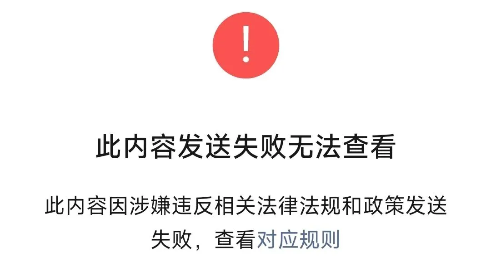

经历本身就是答案
上海等22个城市展开试点，研究建立房屋体检、房屋养老金、房屋保险这三项制度。
读者后台问的很多，我就唠唠嗑，不一定对，仅作为自己个人的一种角度和观点。
房屋体检和房屋保险这两个，我看完心里就一个疑问:
一个是体检的费用是从哪支出，是公共维修基金账户，还是？
至于房屋养老金，这个官方说个人的账户通过缴纳住宅专项维修基金已经建立，试点的重点是政府将公共账户建立起来。
那问题就来了，资金由相关部门监管的话，问责机制应该建立和完善。
要吸取房屋预售资金的被挪用的教训。
更不能A在任挪用，到B的任上说是A干的，和自己无关，最后不了了之。
不能怪咱有疑问，是这类事，我们经历了不少。
至于22城试点房屋养老金这事，对老破小和老破大都是一种利空。
老破小和老破大这类老旧社区，体检费和保险费是少不了的，而这部分支出，提升持有房屋的成本，最后体现在房屋价格下跌上。
老旧小区的房屋价格下跌，对谁有利？这类社区，基本都位于市区，价格下跌了，拆迁成本自然会被压降。
拆迁成本下来了，有利润空间，才会有潜在买家（开发商），才有可能拆迁。
不然现在的拆迁成本那么高，是很难拆得动的。
都让房企做慈善，买的地做成项目都是亏的，做不长久。
这项政策，对谁有利，对谁不利，一目了然。
这两个月，和一些朋友碰面，发现即便是原来那些积极进取的，现在整个风气和精神面貌都大变。
他们有做实业的，有做金融的，有做供应链的，也有做房地产的。
原来大家的问题大多是:什么时候会好起来？还要熬多久？
现在，已经没人提这个问题了，一个个都苟着，不是串门泡茶，就是在家养鱼养猫，种种花草，或陪家人户外散心。
看看周围的这些人，经历本身就是答案。
你们也经常问我，什么时候会好起来。以前我除了说现实和潜在问题，还会给你们做做心理按摩，煲煲鸡汤。
现在，我只想找个人少的地方，做个原生溪流和生态鱼池，引入泉水，养养鱼，种种花草，偶尔钓鱼、游泳。
可惜农村的宅基地不能买卖，只能租，不然就在上海周边买一个宅基地，把这些做起来。
我们社区里暴躁的物业经理，动不动看哪个业主不顺眼就暴揍他一顿，然后各种赔不是，说下次不会。
减少对业主的暴揍，比一边暴揍人家一边事后各种鼓励，要强得多。
全文共删除900字，因为:

认真想想，其实:
不论是谁，在任何时候都不应把自己和他人仅仅视为工具，而应该永远看作自身就是目的。
周末胡咧咧几句，就这样吧。
按日期浏览全部来源（同日按条目标识排序）